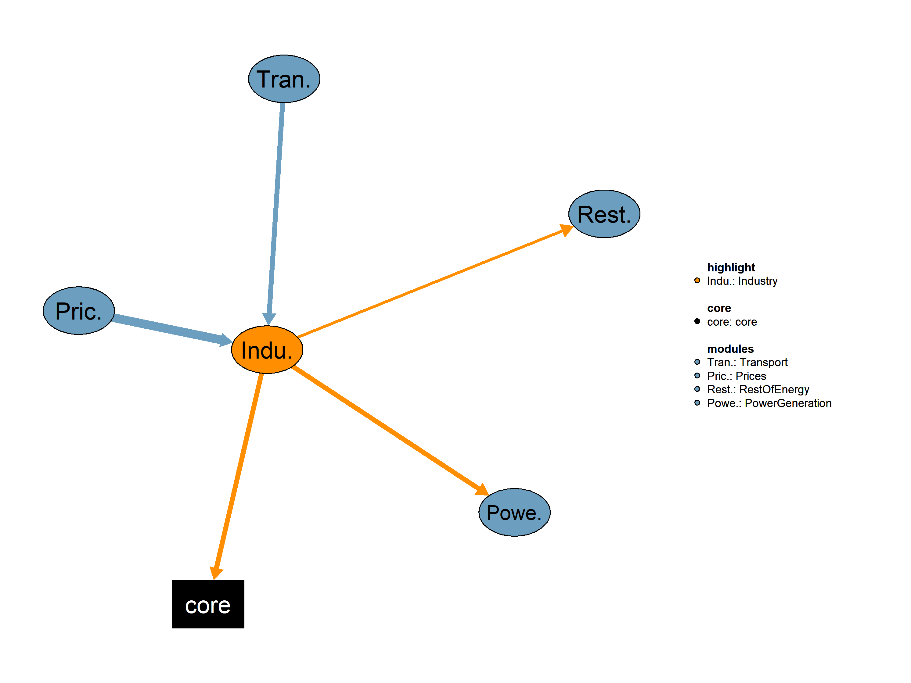

This is the Industry module.

| Description | Unit | A | |
|---|---|---|---|
| VMVConsElecNonSubIndTert (allCy, DSBS, YTIME) |
Consumption of non-substituable electricity in Industry and Tertiary | \(Mtoe\) | x |
| VMVLft (allCy, DSBS, EF, YTIME) |
Lifetime of technologies | \(years\) | x |
| VMVPriceElecInd (allCy, YTIME) |
Electricity index - a function of industry price | \(1\) | x |
| VMVPriceFuelAvgSub (allCy, DSBS, YTIME) |
Average fuel prices per subsector | \(k\$2015/toe\) | x |
| VMVPriceFuelSubsecCarVal (allCy, SBS, EF, YTIME) |
Fuel prices per subsector and fuel | \(k\$2015/toe\) | x |
| VMVPriceFuelSubsecCHP (allCy, DSBS, EF, YTIME) |
Fuel prices per subsector and fuel for CHP plants | \(kUS\$2015/toe\) | x |
| Description | Unit | |
|---|---|---|
| VMVConsFuel (allCy, DSBS, EF, YTIME) |
Consumption of fuels in each demand subsector, excluding heat from heatpumps | \(Mtoe\) |
| VMVConsFuelInclHP (allCy, DSBS, EF, YTIME) |
Consumption of fuels in each demand subsector including heat from heatpumps | \(Mtoe\) |
| VMVCostElcAvgProdCHP (allCy, CHP, YTIME) |
Average Electricity production cost per CHP plant | \(US\$2015/KWh\) |
This is the legacy realization of the Industry module.
Equations*** INDUSTRY - DOMESTIC - NON ENERGY USES - BUNKERS EQUATIONS
QIndxElecIndPrices(allCy,YTIME) "Compute Electricity index - a function of industry price - Estimate"
QCostElecProdCHP(allCy,DSBS,CHP,YTIME) "Compute electricity production cost per CHP plant and demand sector"
QCostTech(allCy,DSBS,rCon,EF,YTIME) "Compute technology cost"
QCostTechIntrm(allCy,DSBS,rCon,EF,YTIME) "Compute intermediate technology cost"
QCostTechMatFac(allCy,DSBS,rCon,EF,YTIME) "Compute the technology cost including the maturity factor per technology and subsector"
QSortTechVarCost(allCy,DSBS,rCon,YTIME) "Compute Technology sorting based on variable cost"
QGapFinalDem(allCy,DSBS,YTIME) "Compute the gap in final demand of industry, tertiary, non-energy uses and bunkers"
QShareTechNewEquip(allCy,DSBS,EF,YTIME) "Compute technology share in new equipment"
QCostProdCHPDem(allCy,DSBS,CHP,YTIME) "Compute variable including fuel electricity production cost per CHP plant and demand sector "Interdependent Equations
Q02ConsFuel(allCy,DSBS,EF,YTIME) "Compute fuel consumption"
Q02ConsElecNonSubIndTert(allCy,INDDOM,YTIME) "Compute non-substituable electricity consumption in Industry and Tertiary"
Q02DemFinSubFuelSubsec(allCy,DSBS,YTIME) "Compute total final demand (of substitutable fuels) per subsector"
Q02ConsFuelInclHP(allCy,DSBS,EF,YTIME) "Equation for fuel consumption in Mtoe (including heat from heatpumps)"
Q02ConsRemSubEquipSubSec(allCy,DSBS,EF,YTIME) "Equation for consumption of remaining substitutble equipment"
Q02CostElcAvgProdCHP(allCy,CHP,YTIME) "Compute Average Electricity production cost per CHP plant"
Q02CostVarAvgElecProd(allCy,CHP,YTIME) "Compute Average variable including fuel electricity production cost per CHP plant"
;
Variables*** INDUSTRY - DOMESTIC - NON ENERGY USES - BUNKERS VARIABLES
VIndxElecIndPrices(allCy,YTIME) "Electricity index - a function of industry price - Estimate (1)"
VCostElecProdCHP(allCy,DSBS,CHP,YTIME) "Electricity production cost per CHP plant and demand sector (US$2015/KWh)"
VCostTech(allCy,DSBS,rCon,EF,YTIME) "Technology cost (KUS$2015/toe)"
VCostTechIntrm(allCy,DSBS,rcon,EF,YTIME) "Intermediate technology cost (KUS$2015/toe)"
VCostTechMatFac(allCy,DSBS,rCon,EF,YTIME) "Technology cost including maturity factor (KUS$2015/toe)"
VSortTechVarCost(allCy,DSBS,rCon,YTIME) "Technology sorting based on variable cost (1)"
VGapFinalDem(allCy,DSBS,YTIME) "Final demand gap to be filed by new technologies (Mtoe)"
VShareTechNewEquip(allCy,DSBS,EF,YTIME) "Technology share in new equipment (1)"
VCostProdCHPDem(allCy,DSBS,CHP,YTIME) "Variable including fuel electricity production cost per CHP plant and demand sector (US$2015/KWh)"Interdependent Variables
VMVConsFuel(allCy,DSBS,EF,YTIME) "Consumption of fuels in each demand subsector, excluding heat from heatpumps (Mtoe)"
VMVConsElecNonSubIndTert(allCy,DSBS,YTIME) "Consumption of non-substituable electricity in Industry and Tertiary (Mtoe)"
VMVDemFinSubFuelSubsec(allCy,DSBS,YTIME) "Total final demand (of substitutable fuels) per subsector (Mtoe)"
VMVConsFuelInclHP(allCy,DSBS,EF,YTIME) "Consumption of fuels in each demand subsector including heat from heatpumps (Mtoe)"
VMVConsRemSubEquipSubSec(allCy,DSBS,EF,YTIME) "Consumption of remaining substitutable equipment (Mtoe)"
VMVCostElcAvgProdCHP(allCy,CHP,YTIME) "Average Electricity production cost per CHP plant (US$2015/KWh)"
VMVCostVarAvgElecProd(allCy,CHP,YTIME) "Average variable including fuel electricity production cost per CHP plant (US$2015/KWh)"
;GENERAL INFORMATION Equation format: “typical useful energy demand equation” The main explanatory variables (drivers) are activity indicators (economic activity) and corresponding energy costs. The type of “demand” is computed based on its past value, the ratio of the current and past activity indicators (with the corresponding elasticity), and the ratio of lagged energy costs (with the corresponding elasticities). This type of equation captures both short term and long term reactions to energy costs. * INDUSTRY - DOMESTIC - NON ENERGY USES - BUNKERS VARIABLES This equation computes the consumption/demand of non-substitutable electricity for subsectors of INDUSTRY and DOMESTIC in the “typical useful energy demand equation”. The main explanatory variables are activity indicators of each subsector and electricity prices per subsector. Corresponding elasticities are applied for activity indicators and electricity prices.
Q02ConsElecNonSubIndTert(allCy,INDDOM,YTIME)$(TIME(YTIME)$(runCy(allCy)))..
VMVConsElecNonSubIndTert(allCy,INDDOM,YTIME)
=E=
[
VMVConsElecNonSubIndTert(allCy,INDDOM,YTIME-1) * ( iActv(YTIME,allCy,INDDOM)/iActv(YTIME-1,allCy,INDDOM) )**
iElastNonSubElec(allCy,INDDOM,"a",YTIME)
* ( VMVPriceFuelSubsecCarVal(allCy,INDDOM,"ELC",YTIME)/VMVPriceFuelSubsecCarVal(allCy,INDDOM,"ELC",YTIME-1) )**iElastNonSubElec(allCy,INDDOM,"b1",YTIME)
* ( VMVPriceFuelSubsecCarVal(allCy,INDDOM,"ELC",YTIME-1)/VMVPriceFuelSubsecCarVal(allCy,INDDOM,"ELC",YTIME-2) )**iElastNonSubElec(allCy,INDDOM,"b2",YTIME)
* prod(KPDL,
( VMVPriceFuelSubsecCarVal(allCy,INDDOM,"ELC",YTIME-ord(KPDL))/VMVPriceFuelSubsecCarVal(allCy,INDDOM,"ELC",YTIME-(ord(KPDL)+1))
)**( iElastNonSubElec(allCy,INDDOM,"c",YTIME)*iFPDL(INDDOM,KPDL))
) ]$iActv(YTIME-1,allCy,INDDOM)+0;This equation determines the consumption of the remaining
substitutable equipment of each energy form per each demand subsector
(excluding TRANSPORT). The “remaining” equipment is computed based on
the past value of consumption (energy form, subsector) and the lifetime
of the technology (energy form) for each subsector.
For the electricity energy form, the non substitutable consumption is
subtracted. This equation expresses the “typical useful energy demand
equation” where the main explanatory variables are activity indicators
and fuel prices.
Q02ConsRemSubEquipSubSec(allCy,DSBS,EF,YTIME)$(TIME(YTIME) $(not TRANSE(DSBS)) $SECTTECH(DSBS,EF) $runCy(allCy))..
VMVConsRemSubEquipSubSec(allCy,DSBS,EF,YTIME)
=E=
[
(VMVLft(allCy,DSBS,EF,YTIME)-1)/VMVLft(allCy,DSBS,EF,YTIME)
* (VMVConsFuelInclHP(allCy,DSBS,EF,YTIME-1) - (VMVConsElecNonSubIndTert(allCy,DSBS,YTIME-1)$(ELCEF(EF) $INDDOM(DSBS)) + 0$(not (ELCEF(EF) $INDDOM(DSBS)))))
* (iActv(YTIME,allCy,DSBS)/iActv(YTIME-1,allCy,DSBS))**iElastA(allCy,DSBS,"a",YTIME)
* (VMVPriceFuelSubsecCarVal(allCy,DSBS,EF,YTIME)/VMVPriceFuelSubsecCarVal(allCy,DSBS,EF,YTIME-1))**iElastA(allCy,DSBS,"b1",YTIME)
* (VMVPriceFuelSubsecCarVal(allCy,DSBS,EF,YTIME-1)/VMVPriceFuelSubsecCarVal(allCy,DSBS,EF,YTIME-2))**iElastA(allCy,DSBS,"b2",YTIME)
* prod(KPDL,
(VMVPriceFuelSubsecCarVal(allCy,DSBS,EF,YTIME-ord(KPDL))/VMVPriceFuelSubsecCarVal(allCy,DSBS,EF,YTIME-(ord(KPDL)+1)))**(iElastA(allCy,DSBS,"c",YTIME)*iFPDL(DSBS,KPDL))
) ]$(iActv(YTIME-1,allCy,DSBS));This equation computes the useful energy demand in each demand subsector (excluding TRANSPORT). This demand is potentially “satisfied” by multiple energy forms/fuels (substitutable demand). The equation follows the “typical useful energy demand” format where the main explanatory variables are activity indicators and average “weighted” fuel prices.
Q02DemFinSubFuelSubsec(allCy,DSBS,YTIME)$(TIME(YTIME) $(not TRANSE(DSBS)) $runCy(allCy))..
VMVDemFinSubFuelSubsec(allCy,DSBS,YTIME)
=E=
[
VMVDemFinSubFuelSubsec(allCy,DSBS,YTIME-1)
* ( iActv(YTIME,allCy,DSBS)/iActv(YTIME-1,allCy,DSBS) )**iElastA(allCy,DSBS,"a",YTIME)
* ( VMVPriceFuelAvgSub(allCy,DSBS,YTIME)/VMVPriceFuelAvgSub(allCy,DSBS,YTIME-1) )**iElastA(allCy,DSBS,"b1",YTIME)
* ( VMVPriceFuelAvgSub(allCy,DSBS,YTIME-1)/VMVPriceFuelAvgSub(allCy,DSBS,YTIME-2) )**iElastA(allCy,DSBS,"b2",YTIME)
* prod(KPDL,
( (VMVPriceFuelAvgSub(allCy,DSBS,YTIME-ord(KPDL))/VMVPriceFuelAvgSub(allCy,DSBS,YTIME-(ord(KPDL)+1)))/(iCGI(allCy,YTIME)**(1/6))
)**( iElastA(allCy,DSBS,"c",YTIME)*iFPDL(DSBS,KPDL))
) ]$iActv(YTIME-1,allCy,DSBS)+0
;This equation calculates the total consumption of electricity in industrial sectors. The consumption is obtained by summing up the electricity consumption in each industrial subsector, excluding substitutable electricity. This equation provides an aggregate measure of electricity consumption in the industrial sectors, considering only non-substitutable electricity.
$ontext
q02ConsTotElecInd(allCy,YTIME)$(TIME(YTIME)$(runCy(allCy)))..
VMvConsTotElecInd(allCy,YTIME)
=E=
SUM(INDSE,VMVConsElecNonSubIndTert(allCy,INDSE,YTIME));
$offtextThis equation calculates the total final demand for substitutable fuels in industrial sectors. The total demand is obtained by summing up the final demand for substitutable fuels across various industrial subsectors. This equation provides a comprehensive view of the total demand for substitutable fuels within the industrial sectors, aggregated across individual subsectors.
$ontext
q02DemFinSubFuelInd(allCy,YTIME)$(TIME(YTIME)$(runCy(allCy)))..
VMvDemFinSubFuelInd(allCy,YTIME)=E= SUM(INDSE,VMVDemFinSubFuelSubsec(allCy,INDSE,YTIME));
$offtextThis equation calculates the total fuel consumption in each demand subsector, excluding heat from heat pumps. The fuel consumption is measured in million tons of oil equivalent and is influenced by two main components: the consumption of fuels in each demand subsector, including heat from heat pumps, and the electricity consumed in heat pump plants.The equation uses the fuel consumption data for each demand subsector, considering both cases with and without heat pump influence. When heat pumps are involved, the electricity consumed in these plants is also taken into account. The result is the total fuel consumption in each demand subsector, providing a comprehensive measure of the energy consumption pattern. This equation offers a comprehensive view of fuel consumption, considering both traditional fuel sources and the additional electricity consumption associated with heat pump plants.
Q02ConsFuel(allCy,DSBS,EF,YTIME)$(TIME(YTIME) $(not TRANSE(DSBS)) $SECTTECH(DSBS,EF) $(not HEATPUMP(EF)) $runCy(allCy))..
VMVConsFuel(allCy,DSBS,EF,YTIME)
=E=
VMVConsFuelInclHP(allCy,DSBS,EF,YTIME)$(not ELCEF(EF)) +
(VMVConsFuelInclHP(allCy,DSBS,EF,YTIME) + VElecConsHeatPla(allCy,DSBS,YTIME))$ELCEF(EF);This equation calculates the estimated electricity index of the industry price for a given year. The estimated index is derived by considering the historical trend of the electricity index, with a focus on the fuel prices in the industrial subsector. The equation utilizes the fuel prices for electricity generation, both in the current and past years, and computes a weighted average based on the historical pattern. The estimated electricity index is influenced by the ratio of fuel prices in the current and previous years, with a power of 0.3 applied to each ratio. This weighting factor introduces a gradual adjustment to reflect the historical changes in fuel prices, providing a more dynamic estimation of the electricity index. This equation provides a method to estimate the electricity index based on historical fuel price trends, allowing for a more flexible and responsive representation of industry price dynamics.
QIndxElecIndPrices(allCy,YTIME)$(TIME(YTIME)$(runCy(allCy)))..
VIndxElecIndPrices(allCy,YTIME)
=E=
VMVPriceElecInd(allCy,YTIME-1) *
((VMVPriceFuelSubsecCarVal(allCy,"OI","ELC",YTIME-1)/VMVPriceFuelAvgSub(allCy,"OI",YTIME-1))/
(VMVPriceFuelSubsecCarVal(allCy,"OI","ELC",YTIME-2)/VMVPriceFuelAvgSub(allCy,"OI",YTIME-2)))**(0.3) *
((VMVPriceFuelSubsecCarVal(allCy,"OI","ELC",YTIME-2)/VMVPriceFuelAvgSub(allCy,"OI",YTIME-2))/
(VMVPriceFuelSubsecCarVal(allCy,"OI","ELC",YTIME-3)/VMVPriceFuelAvgSub(allCy,"OI",YTIME-3)))**(0.3);The equation computes the electricity production cost per Combined Heat and Power plant for a specific demand sector within a given subsector. The cost is determined based on various factors, including the discount rate, technical lifetime of CHP plants, capital cost, fixed O&M cost, availability rate, variable cost, and fuel-related costs. The equation provides a comprehensive assessment of the overall expenses associated with electricity production from CHP plants, considering both the fixed and variable components, as well as factors such as carbon prices and CO2 emission factors. The resulting variable represents the electricity production cost per CHP plant and demand sector, expressed in Euro per kilowatt-hour (Euro/KWh).
QCostElecProdCHP(allCy,DSBS,CHP,YTIME)$(TIME(YTIME) $INDDOM(DSBS) $runCy(allCy))..
VCostElecProdCHP(allCy,DSBS,CHP,YTIME)
=E=
( ( iDisc(allCy,"PG",YTIME) * exp(iDisc(allCy,"PG",YTIME)*iLifChpPla(allCy,DSBS,CHP))
/ (exp(iDisc(allCy,"PG",YTIME)*iLifChpPla(allCy,DSBS,CHP)) -1))
* iInvCostChp(allCy,DSBS,CHP,YTIME)* 1000 * iCGI(allCy,YTIME) + iFixOMCostPerChp(allCy,DSBS,CHP,YTIME)
)/(iAvailRateChp(allCy,DSBS,CHP)*(sGwToTwhPerYear))/1000
+ iVarCostChp(allCy,DSBS,CHP,YTIME)/1000
+ sum(PGEF$CHPtoEF(CHP,PGEF), (VMVPriceFuelSubsecCarVal(allCy,"PG",PGEF,YTIME)+0.001*iCo2EmiFac(allCy,"PG",PGEF,YTIME)*
(sum(NAP$NAPtoALLSBS(NAP,"PG"),VCarVal(allCy,NAP,YTIME))))
* sTWhToMtoe / (iBoiEffChp(allCy,CHP,YTIME) * VMVPriceElecInd(allCy,YTIME)) ); The equation calculates the technology cost for each technology, energy form, and consumer size group within the specified subsector. This cost estimation is based on an intermediate technology cost and the elasticity parameter associated with the given subsector. The intermediate technology cost is raised to the power of the elasticity parameter to determine the final technology cost. The equation provides a comprehensive assessment of the overall expenses associated with different technologies in the given subsector and consumer size group.
QCostTech(allCy,DSBS,rCon,EF,YTIME)$(TIME(YTIME) $(not TRANSE(DSBS)) $(ord(rCon) le iNcon(DSBS)+1) $SECTTECH(DSBS,EF) $runCy(allCy))..
VCostTech(allCy,DSBS,rCon,EF,YTIME)
=E=
VCostTechIntrm(allCy,DSBS,rCon,EF,YTIME)**(-iElaSub(allCy,DSBS)) ; The equation computes the intermediate technology cost, including the lifetime factor, for each technology, energy form, and consumer size group within the specified subsector. This cost estimation plays a crucial role in evaluating the overall expenses associated with adopting and implementing various technologies in the given subsector and consumer size group. The equation encompasses diverse parameters, such as discount rates, lifetime of technologies, capital costs, fixed operation and maintenance costs, fuel prices, annual consumption rates, the number of consumers, the capital goods index, and useful energy conversion factors.
QCostTechIntrm(allCy,DSBS,rCon,EF,YTIME)$(TIME(YTIME) $(not TRANSE(DSBS)) $(ord(rCon) le iNcon(DSBS)+1) $SECTTECH(DSBS,EF) $runCy(allCy))..
VCostTechIntrm(allCy,DSBS,rCon,EF,YTIME) =E=
( (( (iDisc(allCy,DSBS,YTIME)$(not CHP(EF)) + iDisc(allCy,"PG",YTIME)$CHP(EF)) !! in case of chp plants we use the discount rate of power generation sector
* exp((iDisc(allCy,DSBS,YTIME)$(not CHP(EF)) + iDisc(allCy,"PG",YTIME)$CHP(EF))*VMVLft(allCy,DSBS,EF,YTIME))
)
/ (exp((iDisc(allCy,DSBS,YTIME)$(not CHP(EF)) + iDisc(allCy,"PG",YTIME)$CHP(EF))*VMVLft(allCy,DSBS,EF,YTIME))- 1)
) * iCapCostTech(allCy,DSBS,EF,YTIME) * iCGI(allCy,YTIME)
+
iFixOMCostTech(allCy,DSBS,EF,YTIME)/1000
+
VMVPriceFuelSubsecCHP(allCy,DSBS,EF,YTIME)
* iAnnCons(allCy,DSBS,"smallest") * (iAnnCons(allCy,DSBS,"largest")/iAnnCons(allCy,DSBS,"smallest"))**((ord(rCon)-1)/iNcon(DSBS))
)$INDDOM(DSBS)
+
( (( iDisc(allCy,DSBS,YTIME)
* exp(iDisc(allCy,DSBS,YTIME)*VMVLft(allCy,DSBS,EF,YTIME))
)
/ (exp(iDisc(allCy,DSBS,YTIME)*VMVLft(allCy,DSBS,EF,YTIME))- 1)
) * iCapCostTech(allCy,DSBS,EF,YTIME) * iCGI(allCy,YTIME)
+
iFixOMCostTech(allCy,DSBS,EF,YTIME)/1000
+
(
(VMVPriceFuelSubsecCarVal(allCy,DSBS,EF,YTIME)+iVarCostTech(allCy,DSBS,EF,YTIME)/1000)/iUsfEneConvSubTech(allCy,DSBS,EF,YTIME)
)
* iAnnCons(allCy,DSBS,"smallest") * (iAnnCons(allCy,DSBS,"largest")/iAnnCons(allCy,DSBS,"smallest"))**((ord(rCon)-1)/iNcon(DSBS))
)$NENSE(DSBS); This equation calculates the technology cost, including the maturity factor , for each energy form and technology within the specified subsector and consumer size group . The cost is determined by multiplying the maturity factor with the technology cost based on the given parameters.
QCostTechMatFac(allCy,DSBS,rCon,EF,YTIME)$(TIME(YTIME) $(not TRANSE(DSBS)) $(ord(rCon) le iNcon(DSBS)+1) $SECTTECH(DSBS,EF) $runCy(allCy))..
VCostTechMatFac(allCy,DSBS,rCon,EF,YTIME)
=E=
iMatrFactor(allCy,DSBS,EF,YTIME) * VCostTech(allCy,DSBS,rCon,EF,YTIME) ;This equation calculates the technology sorting based on variable cost . It is determined by summing the technology cost, including the maturity factor , for each energy form and technology within the specified subsector and consumer size group. The sorting is conducted based on variable cost considerations.
QSortTechVarCost(allCy,DSBS,rCon,YTIME)$(TIME(YTIME) $(not TRANSE(DSBS)) $(ord(rCon) le iNcon(DSBS)+1) $runCy(allCy))..
VSortTechVarCost(allCy,DSBS,rCon,YTIME)
=E=
sum((EF)$(SECTTECH(DSBS,EF) ),VCostTechMatFac(allCy,DSBS,rCon,EF,YTIME));This equation calculates the gap in final demand for industry, tertiary, non-energy uses, and bunkers. It is determined by subtracting the total final demand per subsector from the consumption of remaining substitutable equipment. The square root term is included to ensure a non-negative result.
QGapFinalDem(allCy,DSBS,YTIME)$(TIME(YTIME) $(not TRANSE(DSBS)) $runCy(allCy))..
VGapFinalDem(allCy,DSBS,YTIME)
=E=
(VMVDemFinSubFuelSubsec(allCy,DSBS,YTIME) - sum(EF$SECTTECH(DSBS,EF), VMVConsRemSubEquipSubSec(allCy,DSBS,EF,YTIME))
+ SQRT( SQR(VMVDemFinSubFuelSubsec(allCy,DSBS,YTIME) - sum(EF$SECTTECH(DSBS,EF), VMVConsRemSubEquipSubSec(allCy,DSBS,EF,YTIME))))) /2;This equation calculates the technology share in new equipment based on factors such as maturity factor, cumulative distribution function of consumer size groups, number of consumers, technology cost, distribution function of consumer size groups, and technology sorting.
QShareTechNewEquip(allCy,DSBS,EF,YTIME)$(TIME(YTIME) $SECTTECH(DSBS,EF) $(not TRANSE(DSBS)) $runCy(allCy))..
VShareTechNewEquip(allCy,DSBS,EF,YTIME) =E=
iMatrFactor(allCy,DSBS,EF,YTIME) / iCumDistrFuncConsSize(allCy,DSBS) *
sum(rCon$(ord(rCon) le iNcon(DSBS)+1),
VCostTech(allCy,DSBS,rCon,EF,YTIME)
* iDisFunConSize(allCy,DSBS,rCon)/VSortTechVarCost(allCy,DSBS,rCon,YTIME));This equation calculates the consumption of fuels in each demand subsector, including heat from heat pumps . It considers the consumption of remaining substitutable equipment, the technology share in new equipment, and the final demand gap to be filled by new technologies. Additionally, non-substitutable electricity consumption in Industry and Tertiary sectors is included.
Q02ConsFuelInclHP(allCy,DSBS,EF,YTIME)$(TIME(YTIME) $(not TRANSE(DSBS)) $SECTTECH(DSBS,EF) $runCy(allCy))..
VMVConsFuelInclHP(allCy,DSBS,EF,YTIME)
=E=
VMVConsRemSubEquipSubSec(allCy,DSBS,EF,YTIME)+
(VShareTechNewEquip(allCy,DSBS,EF,YTIME)*VGapFinalDem(allCy,DSBS,YTIME))\((VGapFinalDem.L(allCy,DSBS,YTIME)>0) ``` + (VMVConsElecNonSubIndTert(allCy,DSBS,YTIME))\)(INDDOM(DSBS) and ELCEF(EF));
This equation calculates the variable, including fuel electricity production cost per CHP plant and demand sector, taking into account the variable cost (other than fuel)
per CHP type and the summation of fuel-related costs for each energy form . The calculation involves fuel prices, CO2 emission factors, boiler efficiency, electricity
index, and carbon prices, adjusted by various factors. The equation uses these terms to calculate the variable, including fuel electricity production cost per CHP plant and
demand sector. The result is expressed in Euro per kilowatt-hour (Euro/KWh). QCostProdCHPDem(allCy,DSBS,CHP,YTIME)$(TIME(YTIME) $INDDOM(DSBS) \(runCy(allCy)).. VCostProdCHPDem(allCy,DSBS,CHP,YTIME) =E= iVarCostChp(allCy,DSBS,CHP,YTIME)/1E3 + sum(PGEF\)CHPtoEF(CHP,PGEF), (VMVPriceFuelSubsecCarVal(allCy,“PG”,PGEF,YTIME)+1e-3iCo2EmiFac(allCy,“PG”,PGEF,YTIME) (sum(NAP\(NAPtoALLSBS(NAP,"PG"),VCarVal(allCy,NAP,YTIME)))) *sTWhToMtoe/(iBoiEffChp(allCy,CHP,YTIME)*VMVPriceElecInd(allCy,YTIME))); ``` The equation calculates the average electricity production cost per Combined Heat and Power plant . It involves a summation over demand subsectors . The average electricity production cost is determined by considering the electricity production cost per CHP plant for each demand subsector. The result is expressed in Euro per kilowatt-hour (Euro/KWh). ``` Q02CostElcAvgProdCHP(allCy,CHP,YTIME)\)(TIME(YTIME)$(runCy(allCy))).. VMVCostElcAvgProdCHP(allCy,CHP,YTIME) =E= (sum(INDDOM, VMVConsFuel(allCy,INDDOM,CHP,YTIME-1)/SUM(INDDOM2,VMVConsFuel(allCy,INDDOM2,CHP,YTIME-1))*VCostElecProdCHP(allCy,INDDOM,CHP,YTIME))) \(SUM(INDDOM2,VMVConsFuel.L(allCy,INDDOM2,CHP,YTIME-1))+0\)(NOT SUM(INDDOM2,VMVConsFuel.L(allCy,INDDOM2,CHP,YTIME-1)));
The equation computes the average variable cost, including fuel and electricity production cost, per Combined Heat and Power plant.
The equation involves a summation over demand subsectors , where the variable cost per CHP plant is calculated based on fuel
consumption and the variable cost of electricity production . The resulting average variable cost is expressed in Euro per kilowatt-hour (Euro/KWh).
The conditional statement ensures that the denominator in the calculation is not zero, avoiding division by zero issues.Q02CostVarAvgElecProd(allCy,CHP,YTIME)$(TIME(YTIME) $runCy(allCy)) .. VMVCostVarAvgElecProd(allCy,CHP,YTIME) =E= (sum(INDDOM, VMVConsFuel(allCy,INDDOM,CHP,YTIME-1)/SUM(INDDOM2,VMVConsFuel(allCy,INDDOM2,CHP,YTIME-1)) *VCostProdCHPDem(allCy,INDDOM,CHP,YTIME))) \(SUM(INDDOM2,VMVConsFuel.L(allCy,INDDOM2,CHP,YTIME-1))+0\)(NOT SUM(INDDOM2,VMVConsFuel.L(allCy,INDDOM2,CHP,YTIME-1)));
table iElastNonSubElecData(SBS,ETYPES,YTIME) “Elasticities of Non Substitutable Electricity (1)” $ondelim $include “./iElastNonSubElecData.csv” $offdelim ; table iElaSub(allCy,DSBS) “Elasticities by subsector for all countries (1)” ; Parameters iTotFinEneDemSubBaseYr(allCy,SBS,YTIME) “Total Final Energy Demand per subsector in Base year (Mtoe)” iExogDemOfBiomass(allCy,SBS,YTIME) “Demand of tranditional biomass defined exogenously ()” iLifChpPla(allCy,DSBS,CHP) “Technical Lifetime for CHP plants (years)” $IF %Calibration% == off iElastNonSubElec(allCy,SBS,ETYPES,YTIME) “Elasticities of Non Substitutable Electricity (1)” iInvCostChp(allCy,DSBS,CHP,YTIME) “Capital Cost per CHP plant type (kUS$2015/KW)” iFixOMCostPerChp(allCy,DSBS,CHP,YTIME) “Fixed O&M cost per CHP plant type (US$2015/KW)” iAvailRateChp(allCy,DSBS,CHP) “Availability rate of CHP Plants ()” iVarCostChp(allCy,DSBS,CHP,YTIME) “Variable (other than fuel) cost per CHP Type (Gross US\(2015/KW)" iBoiEffChp(allCy,CHP,YTIME) "Boiler efficiency (typical) used in adjusting CHP efficiency ()" ; iTotFinEneDemSubBaseYr(runCy,TRANSE,YTIME) = sum(EF\)(SECTTECH(TRANSE,EF) \((not plugin(EF))), iFuelConsPerFueSub(runCy,TRANSE,EF,YTIME)); iTotFinEneDemSubBaseYr(runCy,INDSE,YTIME) = SUM(EF\)(SECTTECH(INDSE,EF)),iFuelConsPerFueSub(runCy,INDSE,EF,YTIME)); iTotFinEneDemSubBaseYr(runCy,DOMSE,YTIME) = SUM(EF\((SECTTECH(DOMSE,EF)),iFuelConsPerFueSub(runCy,DOMSE,EF,YTIME)); iTotFinEneDemSubBaseYr(runCy,NENSE,YTIME) = SUM(EF\)(SECTTECH(NENSE,EF)),iFuelConsPerFueSub(runCy,NENSE,EF,YTIME)); iExogDemOfBiomass(runCy,DOMSE,YTIME) = 0; iLifChpPla(runCy,DSBS,CHP) = iDataChpPowGen(CHP,”2010”,“LFT”); $IFTHEN.calib %Calibration% == off iElastNonSubElec(runCy,SBS,ETYPES,YTIME) = iElastNonSubElecData(SBS,ETYPES,YTIME); $ELSE.calib variable iElastNonSubElec(allCy,SBS,ETYPES,YTIME) “Elasticities of Non Substitutable Electricity (1)”; iElastNonSubElec.L(runCy,SBS,ETYPES,YTIME) = iElastNonSubElecData(SBS,ETYPES,YTIME); iElastNonSubElec.LO(runCy,SBS,“a”,YTIME) = 0.001; iElastNonSubElec.UP(runCy,SBS,“a”,YTIME) = 10; iElastNonSubElec.LO(runCy,SBS,“b1”,YTIME) = -10; iElastNonSubElec.UP(runCy,SBS,“b1”,YTIME) = -0.001; iElastNonSubElec.LO(runCy,SBS,“b2”,YTIME) = -10; iElastNonSubElec.UP(runCy,SBS,“b2”,YTIME) = -0.001; iElastNonSubElec.LO(runCy,SBS,“c”,YTIME) = -10; iElastNonSubElec.UP(runCy,SBS,“c”,YTIME) = -0.001; $ENDIF.calib iInvCostChp(runCy,DSBS,CHP,YTIME) = iDataChpPowGen(CHP,“2010”,“IC”); iFixOMCostPerChp(runCy,DSBS,CHP,YTIME) = iDataChpPowGen(CHP,“2010”,“FC”); iAvailRateChp(runCy,DSBS,CHP) = iDataChpPowGen(CHP,“2010”,“AVAIL”); iVarCostChp(runCy,DSBS,CHP,YTIME) = iDataChpPowGen(CHP,“2010”,“VOM”); iBoiEffChp(runCy,CHP,YTIME) = iDataChpPowGen(CHP,“2010”,“BOILEFF”); iElaSub(runCy,DSBS) = iElaSubData(DSBS);
*VARIABLE INITIALISATION*VCostTechIntrm.L(runCy,DSBS,rcon,EF,YTIME) = 0.1; VSortTechVarCost.L(runCy,DSBS,rCon,YTIME) = 0.00000001; VShareTechNewEquip.FX(runCy,DSBS,EF,YTIME)\((SECTTECH(DSBS,EF)\)(not An(YTIME))) = 0; VMVConsFuel.L(runCy,DSBS,EF,YTIME) = 0.0000000001; VMVConsFuel.FX(runCy,DSBS,EF,YTIME)$(SECTTECH(DSBS,EF) $(not HEATPUMP(EF)) $(not TRANSE(DSBS)) \((not An(YTIME))) = iFuelConsPerFueSub(runCy,DSBS,EF,YTIME); VMVConsElecNonSubIndTert.L(runCy,DSBS,YTIME)=0.1; VMVConsElecNonSubIndTert.FX(runCy,INDDOM,YTIME)\)(not An(YTIME)) = iFuelConsPerFueSub(runCy,INDDOM,“ELC”,YTIME) * iShrNonSubElecInTotElecDem(runCy,INDDOM); VMVDemFinSubFuelSubsec.FX(runCy,INDDOM,YTIME)\((not An(YTIME)) = max(iTotFinEneDemSubBaseYr(runCy,INDDOM,YTIME) - VMVConsElecNonSubIndTert.L(runCy,INDDOM,YTIME),1e-5); VMVDemFinSubFuelSubsec.FX(runCy,NENSE,YTIME)\)(not An(YTIME)) = max(iTotFinEneDemSubBaseYr(runCy,NENSE,YTIME),1e-5); VMVDemFinSubFuelSubsec.FX(runCy,“HOU”,YTIME)\((not An(YTIME)) = max(iTotFinEneDemSubBaseYr(runCy,"HOU",YTIME) - VMVConsElecNonSubIndTert.L(runCy,"HOU",YTIME)-iExogDemOfBiomass(runCy,"HOU",YTIME),1e-5); VMVConsFuelInclHP.FX(runCy,DSBS,EF,YTIME)\)(SECTTECH(DSBS,EF) $(not TRANSE(DSBS)) \((not An(YTIME))) = (iFuelConsPerFueSub(runCy,DSBS,EF,YTIME))\)((not ELCEF(EF)) \((not HEATPUMP(EF))) +(VElecConsHeatPla.L(runCy,DSBS,YTIME)*iUsfEneConvSubTech(runCy,DSBS,"HEATPUMP",YTIME))\)HEATPUMP(EF)+ (iFuelConsPerFueSub(runCy,DSBS,EF,YTIME)-VElecConsHeatPla.L(runCy,DSBS,YTIME))\(ELCEF(EF) +1e-7\)(H2EF(EF) or sameas(“STE1AH2F”,EF)); VMVConsRemSubEquipSubSec.FX(runCy,DSBS,EF,YTIME)$(SECTTECH(DSBS,EF) \((not An(ytime))) = (VMVConsFuelInclHP.L(runCy ,DSBS,EF,YTIME) - (VMVConsElecNonSubIndTert.L(runCy,DSBS,YTIME)\)(ELCEF(EF) \(INDDOM(DSBS)) + 0\)(not (ELCEF(EF) $INDDOM(DSBS))))); ```
Limitations There are no known limitations.
| Description | Unit | A | |
|---|---|---|---|
| iAvailRateChp (allCy, DSBS, CHP) |
Availability rate of CHP Plants | x | |
| iBoiEffChp (allCy, CHP, YTIME) |
Boiler efficiency (typical) used in adjusting CHP efficiency | x | |
| iElastNonSubElec (allCy, SBS, ETYPES, YTIME) |
Elasticities of Non Substitutable Electricity | \(1\) | x |
| iElastNonSubElecData (SBS, ETYPES, YTIME) |
Elasticities of Non Substitutable Electricity | \(1\) | x |
| iElaSub (allCy, DSBS) |
Elasticities by subsector for all countries | \(1\) | x |
| iExogDemOfBiomass (allCy, SBS, YTIME) |
Demand of tranditional biomass defined exogenously | x | |
| iFixOMCostPerChp (allCy, DSBS, CHP, YTIME) |
Fixed O&M cost per CHP plant type | \(US\$2015/KW\) | x |
| iInvCostChp (allCy, DSBS, CHP, YTIME) |
Capital Cost per CHP plant type | \(kUS\$2015/KW\) | x |
| iLifChpPla (allCy, DSBS, CHP) |
Technical Lifetime for CHP plants | \(years\) | x |
| iTotFinEneDemSubBaseYr (allCy, SBS, YTIME) |
Total Final Energy Demand per subsector in Base year | \(Mtoe\) | x |
| iVarCostChp (allCy, DSBS, CHP, YTIME) |
Variable (other than fuel) cost per CHP Type | \(Gross US\$2015/KW\) | x |
| Q02ConsElecNonSubIndTert (allCy, INDDOM, YTIME) |
Compute non-substituable electricity consumption in Industry and Tertiary | x | |
| Q02ConsFuel (allCy, DSBS, EF, YTIME) |
Compute fuel consumption | x | |
| Q02ConsFuelInclHP (allCy, DSBS, EF, YTIME) |
Equation for fuel consumption in Mtoe | \(including heat from heatpumps\) | x |
| Q02ConsRemSubEquipSubSec (allCy, DSBS, EF, YTIME) |
Equation for consumption of remaining substitutble equipment | x | |
| Q02CostElcAvgProdCHP (allCy, CHP, YTIME) |
Compute Average Electricity production cost per CHP plant | x | |
| Q02CostVarAvgElecProd (allCy, CHP, YTIME) |
Compute Average variable including fuel electricity production cost per CHP plant | x | |
| Q02DemFinSubFuelSubsec (allCy, DSBS, YTIME) |
Compute total final demand (of substitutable fuels) per subsector | x | |
| QCostElecProdCHP (allCy, DSBS, CHP, YTIME) |
Compute electricity production cost per CHP plant and demand sector | x | |
| QCostProdCHPDem (allCy, DSBS, CHP, YTIME) |
Compute variable including fuel electricity production cost per CHP plant and demand sector | x | |
| QCostTech (allCy, DSBS, rCon, EF, YTIME) |
Compute technology cost | x | |
| QCostTechIntrm (allCy, DSBS, rCon, EF, YTIME) |
Compute intermediate technology cost | x | |
| QCostTechMatFac (allCy, DSBS, rCon, EF, YTIME) |
Compute the technology cost including the maturity factor per technology and subsector | x | |
| QGapFinalDem (allCy, DSBS, YTIME) |
Compute the gap in final demand of industry, tertiary, non-energy uses and bunkers | x | |
| QIndxElecIndPrices (allCy, YTIME) |
Compute Electricity index - a function of industry price - Estimate | x | |
| QShareTechNewEquip (allCy, DSBS, EF, YTIME) |
Compute technology share in new equipment | x | |
| QSortTechVarCost (allCy, DSBS, rCon, YTIME) |
Compute Technology sorting based on variable cost | x | |
| VCostElecProdCHP (allCy, DSBS, CHP, YTIME) |
Electricity production cost per CHP plant and demand sector | \(US\$2015/KWh\) | x |
| VCostProdCHPDem (allCy, DSBS, CHP, YTIME) |
Variable including fuel electricity production cost per CHP plant and demand sector | \(US\$2015/KWh\) | x |
| VCostTech (allCy, DSBS, rCon, EF, YTIME) |
Technology cost | \(KUS\$2015/toe\) | x |
| VCostTechIntrm (allCy, DSBS, rcon, EF, YTIME) |
Intermediate technology cost | \(KUS\$2015/toe\) | x |
| VCostTechMatFac (allCy, DSBS, rCon, EF, YTIME) |
Technology cost including maturity factor | \(KUS\$2015/toe\) | x |
| VGapFinalDem (allCy, DSBS, YTIME) |
Final demand gap to be filed by new technologies | \(Mtoe\) | x |
| VIndxElecIndPrices (allCy, YTIME) |
Electricity index - a function of industry price - Estimate | \(1\) | x |
| VMVConsRemSubEquipSubSec (allCy, DSBS, EF, YTIME) |
Consumption of remaining substitutable equipment | \(Mtoe\) | x |
| VMVCostVarAvgElecProd (allCy, CHP, YTIME) |
Average variable including fuel electricity production cost per CHP plant | \(US\$2015/KWh\) | x |
| VMVDemFinSubFuelSubsec (allCy, DSBS, YTIME) |
Total final demand (of substitutable fuels) per subsector | \(Mtoe\) | x |
| VShareTechNewEquip (allCy, DSBS, EF, YTIME) |
Technology share in new equipment | \(1\) | x |
| VSortTechVarCost (allCy, DSBS, rCon, YTIME) |
Technology sorting based on variable cost | \(1\) | x |
| description | |
|---|---|
| allCy | All Countries Used in the Model |
| biomass(balef) | |
| CHP(EF) | CHP Plants |
| CHPPGSET | |
| CHPtoEF(EF, EF) | correspondence of CHP plant types to fuels |
| conSet | Consumer size groups related to space heating |
| DOMSE(DSBS) | Tertiary SubSectors |
| DSBS(SBS) | All Demand Subsectors |
| EF | Energy Forms |
| ELCEF(EF) | Electricity |
| ETYPES | Elasticities types |
| H2EF(EF) | Hydrogen |
| HEATPUMP(EF) | Heatpumps are reducing the heat requirements of the sector but increasing electricity consumption |
| HOU(DSBS) | Households |
| INDDOM(DSBS) | Industry and Tertiary |
| INDSE(DSBS) | Industrial SubSectors |
| NAP(Policies_set) | National Allocation Plan sector categories |
| NAPtoALLSBS(NAP, ALLSBS) | Energy sectors corresponding to NAP sectors |
| NENSE(DSBS) | Non Energy and Bunkers |
| PGEF(EFS) | Energy forms used for power generation |
| rCon | counter for the number of consumers |
| runCy(allCy) | Countries for which the model is running |
| runCyL(allCy) | Countries for which the model is running (used in countries loop) |
| SBS(ALLSBS) | Model Subsectors |
| SECTTECH(SBS, EF) | Link between Model Subsectors and Fuels |
| TRANSE(DSBS) | All Transport Subsectors |
| ytime | Model time horizon |
01_Transport, 03_RestOfEnergy, 04_PowerGeneration, 08_Prices, core